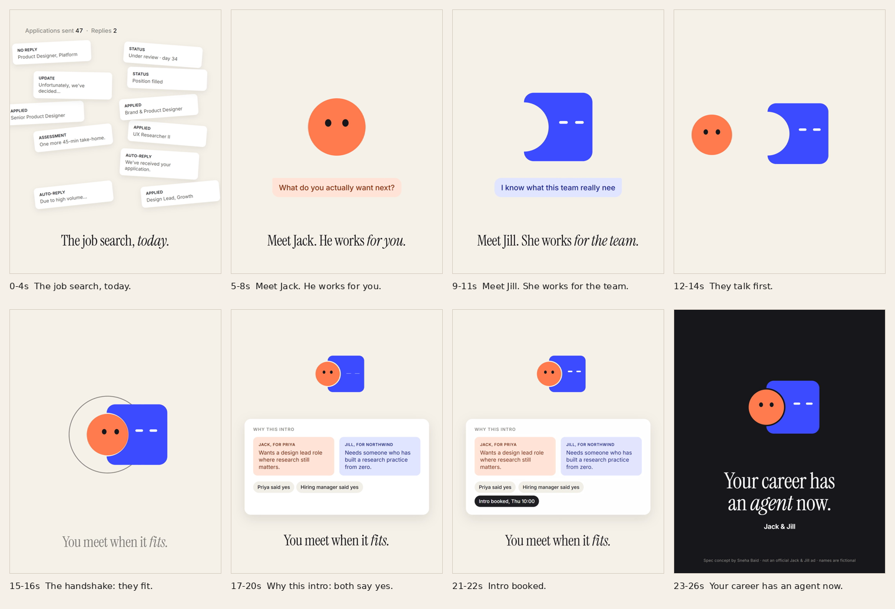
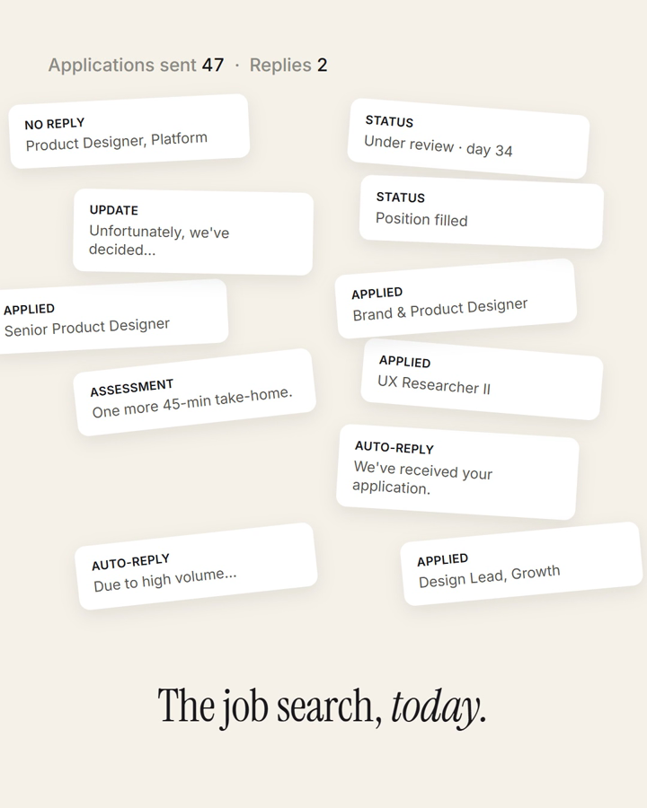
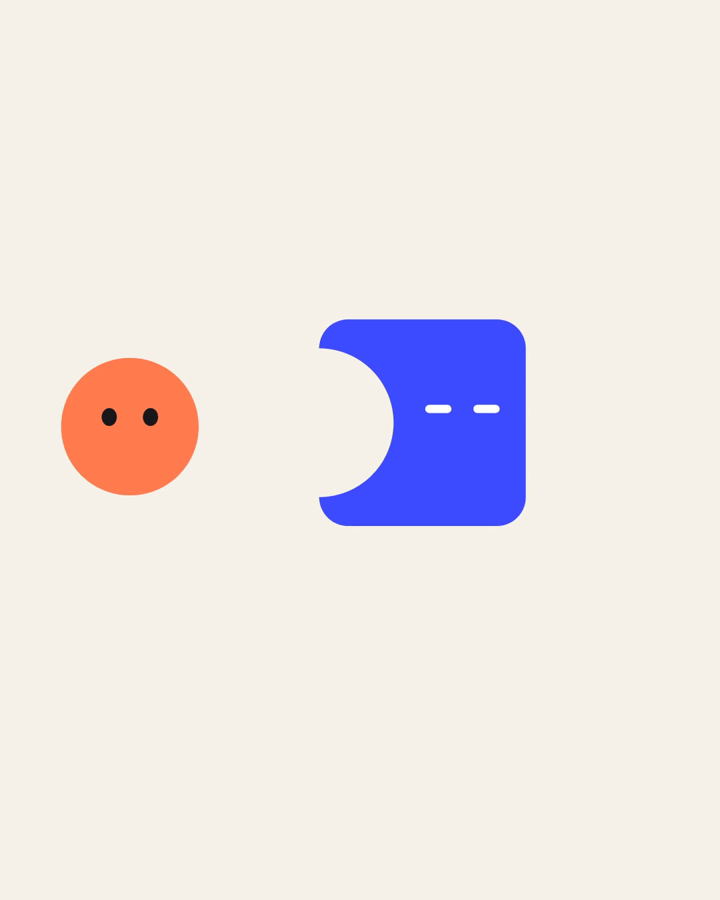
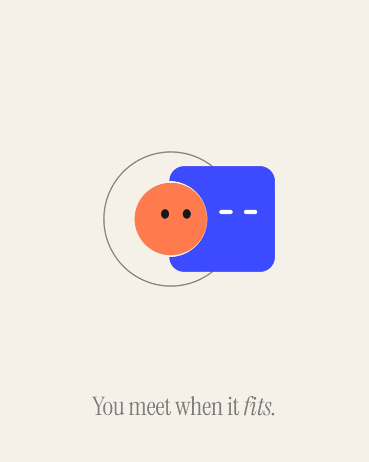
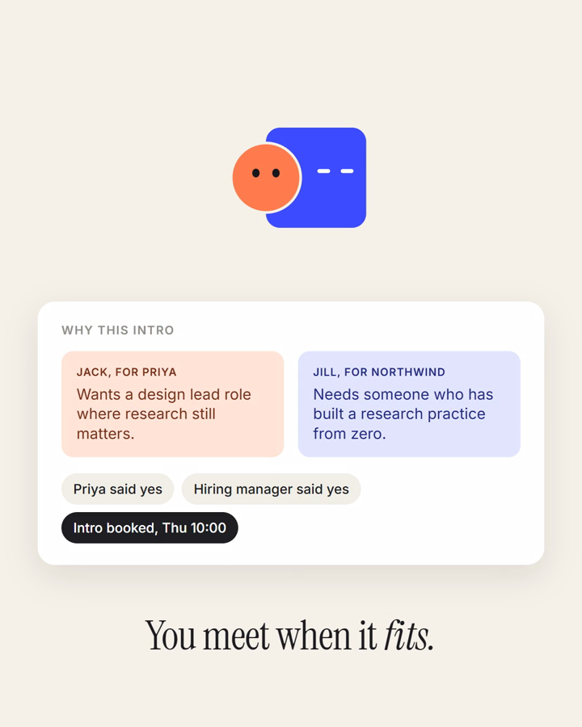

Jack & Jill Concept Ideas
Speculative creative concepts made for a pitch. Independent concept, art direction, design, motion, and accessibility framing by Sneha Baid; AI used as a supporting ideation/build tool.
01 · Two Agents, One Handshake
▶️ Watch the finished 26-second piece below (or open the video file).
TranscriptStatic storyboardRepository and full write-up


Brand rationale
Extends the dual-agent idea. Jack works for the candidate, Jill works for the company, and they work together. The film makes that structure the story: one line per agent saying who it is loyal to, then the two of them meeting.
Two halves of one mark. Jack is a warm orange circle; Jill is a cool blue square with a notch exactly his size. Neither is complete alone, so the promise of a good match lives in the character design itself.
Agents do the legwork, humans make the call. The "Why this intro" card shows each agent's reasoning, then Priya said yes and Hiring manager said yes appear before Intro booked. AI handles the noise; people keep the final say.
From noise to signal. The opening rebuilds the real job search as UI cards (auto-replies, "under review, day 34", 47 applications, 2 replies) so the agents arrive as relief, not as a feature list.
Key frames




Motion logic
| 0–4s | Status cards accumulate at slight angles; applications climb while replies stay at 2. Clutter creates overload. |
|---|---|
| 5–11s | Screen clears to one character at a time. Each line types out letter by letter, with mirrored timing for Jack and Jill so they read as equals who listen. |
| 12–14s | They move toward each other on one axis; a dotted line stands in for the conversation the user never has to sit through. |
| 15–16s | Jack slides into Jill's notch and one ring pulses out. The only moment of emphasis in the film. |
| 17–22s | The pair scales down to make room for the reasoning card; consent chips appear one at a time, then Intro booked. |
| 23–26s | Background fades to dark and the joined characters hold as a lockup above the line. |
Why the handshake
A handshake is the moment two parties agree to meet, which is exactly what Jack & Jill arrange. It needs both sides, as a two-sided marketplace does. It signals agreement rather than automation: the agents shake hands on your behalf, but both people still say yes. And a shape clicking into place reads instantly on a muted phone feed.
Accessibility
In place: no reliance on sound (the video is silent and every beat is on screen) · timed transcript · static storyboard alternative, shown first when reduced motion is on · no autoplay · alt text on all images.
Planned, not yet done: WebVTT audio-description track · photosensitivity review · formal WCAG AA contrast audit of the small in-video text · reduced-motion video cut · captioned voiceover version.